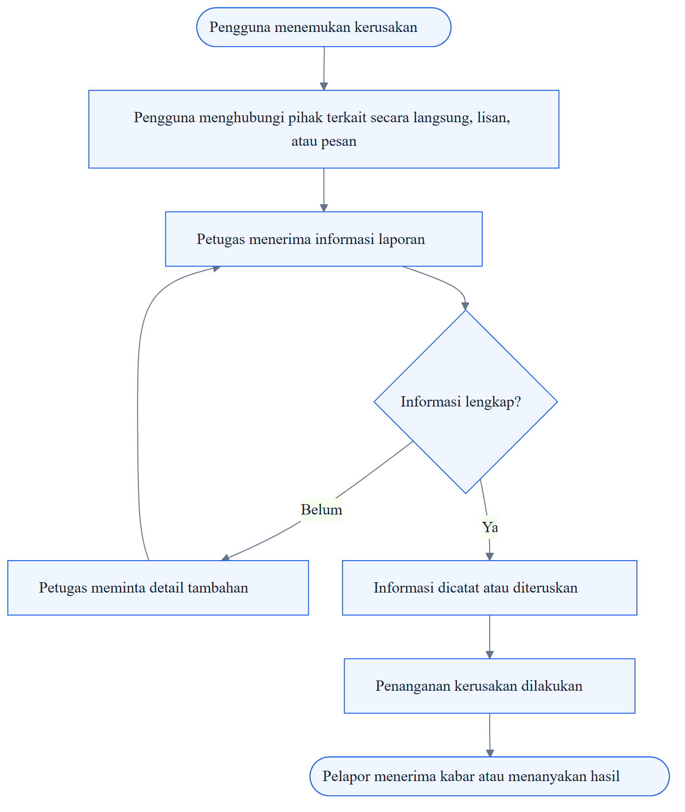
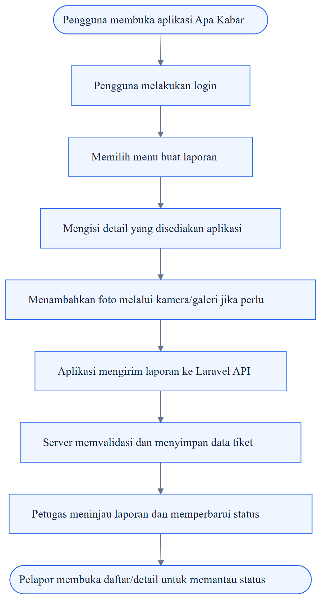

DOKUMEN SPESIFIKASI KEBUTUHAN & TARGET APLIKASI
Aplikasi Pelaporan Kerusakan Barang & Fasilitas
Analisis Kebutuhan Pengguna & Karakteristik Perangkat Bergerak
PEMROGRAMAN BERGERAK TUGAS 1 TA 2026/2027
Mata Kuliah
Pemrograman Bergerak
Nama Mahasiswa
Rifandi Usdan Fanani Putra
NIM
2305101086
Program Studi / Institusi
Teknik Informatika / Universitas PGRI Madiun
Validitas data
Dokumen ini merupakan analisis awal berdasarkan fungsi dan arsitektur proyek. Belum ada data wawancara atau observasi lapangan yang diberikan. Pernyataan tentang kondisi proses manual ditandai sebagai hipotesis dan perlu divalidasi.
Apa Kabar merupakan aplikasi ticketing untuk membantu pengguna menyampaikan laporan kerusakan barang atau fasilitas, melampirkan bukti foto, serta memantau perkembangan laporan. Dari sisi pengelola, sistem membantu petugas menerima, memeriksa, dan memperbarui status tiket secara lebih terpusat.
Proyek yang menjadi dasar dokumen ini menggunakan Vue.js untuk antarmuka, Laravel 12 sebagai REST API, MySQL/MariaDB sebagai basis data, serta Capacitor untuk membungkus aplikasi menjadi aplikasi Android. Fokus dokumen adalah kebutuhan pengguna, alur kerja, karakteristik mobile, dan target yang dapat diuji.
Ruang lingkup
Autentikasi, pembuatan laporan, lampiran gambar, daftar/detail tiket, pemantauan status, serta peran pengelola sesuai implementasi yang benar-benar ada.
01 / LAPOR
Buat laporan terstruktur
Formulir membantu mengumpulkan detail dan bukti kerusakan.
02 / KELOLA
Informasi tiket lebih terpusat
Data tiket dapat diperiksa sesuai hak akses.
03 / PANTAU
Cek perkembangan laporan
Pelapor melihat status terbaru dari backend.
Kerusakan barang atau fasilitas membutuhkan proses pelaporan yang jelas agar informasi sampai kepada pihak yang bertanggung jawab dan dapat ditindaklanjuti. Jika laporan disampaikan secara lisan atau lewat pesan yang tersebar, informasi bisa tidak seragam, bukti kerusakan sulit dihimpun, dan pelapor belum tentu memiliki cara terstruktur untuk mengetahui perkembangan penanganan.
Batasan analisis
Pernyataan tersebut adalah konteks masalah yang perlu dikonfirmasi pada lingkungan penggunaan sebenarnya, bukan hasil observasi yang sudah terukur.
| Aspek | Potensi masalah | Dampak yang mungkin | Cara validasi |
|---|---|---|---|
| Pelaporan | Laporan berpotensi masuk lewat beberapa kanal atau lisan. | Informasi sulit ditelusuri dalam satu tempat. | Wawancara pelapor dan petugas; amati proses aktual. |
| Kelengkapan | Detail lokasi/kerusakan atau bukti foto mungkin tidak selalu ada. | Petugas perlu meminta klarifikasi tambahan. | Tinjau contoh laporan terdahulu dengan izin. |
| Status tindak lanjut | Pelapor mungkin belum dapat melihat status terkini secara mandiri. | Pertanyaan status berulang dapat terjadi. | Tanyakan bagaimana status dibagikan saat ini. |
| Dokumentasi | Riwayat laporan berpotensi tersebar pada catatan/pesan. | Rekap dan pencarian laporan lebih sulit. | Tinjau media pencatatan yang benar-benar digunakan. |
Agar tugas memenuhi unsur “data temuan”, lakukan wawancara singkat dengan calon pelapor dan petugas/pengelola. Catat tanggal, peran responden tanpa data sensitif, pertanyaan, jawaban ringkas, dan bukti proses yang diizinkan. Jangan menulis jumlah responden, persentase, atau kesimpulan kuantitatif sebelum data benar-benar diperoleh.
| Pertanyaan wawancara | Catatan jawaban |
|---|---|
| 1. Bagaimana laporan kerusakan disampaikan saat ini? | |
| 2. Informasi apa yang wajib disertakan? | |
| 3. Bagaimana pelapor mengetahui status laporan? | |
| 4. Apakah foto dari ponsel dibutuhkan? |
Flowchart berikut adalah gambaran awal alur pelaporan manual/tersebar. Revisi setiap langkah berdasarkan praktik nyata di lingkungan kampus atau instansi tempat aplikasi akan digunakan.

SP4N-LAPOR! merupakan contoh layanan pengaduan digital yang menyediakan kanal penyampaian laporan serta informasi tindak lanjut. Referensi ini digunakan sebagai pembanding pola layanan digital, bukan sebagai bukti bahwa proses di kampus memiliki prosedur yang sama.
Apa Kabar ditawarkan sebagai aplikasi Android untuk mengirim laporan dan memantau perkembangannya. Petugas menggunakan antarmuka pengelolaan yang tersedia untuk memeriksa laporan dan memperbarui status sesuai hak akses.

| Lapisan | Komponen | Tanggung jawab |
|---|---|---|
| Mobile UI | Vue.js + Capacitor | Login, formulir laporan, daftar/detail tiket, dan interaksi pengguna. |
| API | Laravel 12 REST API | Autentikasi, validasi, proses bisnis, otorisasi, dan respons data. |
| Database | MySQL/MariaDB | Menyimpan akun, tiket, status, dan metadata lampiran. |
| Berkas | Storage gambar | Menyimpan foto secara persisten, idealnya pada layanan object storage atau disk yang sesuai. |
● Menunggu → ● Diverifikasi → ● Diproses → ● Selesai / ● Ditolak
Catatan
Nama status di atas adalah usulan untuk menggambarkan alur. Sesuaikan dengan nilai enum/kolom status yang benar-benar ada pada repository sebelum dipakai sebagai spesifikasi final.
| Pengguna | Tujuan | Kebutuhan utama |
|---|---|---|
| Pelapor mahasiswa / pengguna fasilitas |
Melaporkan kerusakan dan mengetahui perkembangan. | Login; formulir yang mudah; unggah foto; daftar/detail tiket; status yang jelas. |
| Petugas admin pengelola |
Memeriksa laporan dan mengatur tindak lanjut. | Melihat tiket dan lampiran; memperbarui status; mengelola data sesuai kewenangan. |
| ID | Kebutuhan | Prioritas | Kriteria penerimaan awal |
|---|---|---|---|
| KF-01 | Login dan logout pengguna. | TINGGI | Kredensial valid membuka sesi; kredensial salah menghasilkan pesan yang jelas. |
| KF-02 | Membuat tiket/laporan. | TINGGI | Field wajib divalidasi; laporan yang berhasil tersimpan muncul pada daftar/detail. |
| KF-03 | Menambahkan foto bukti. | TINGGI | Jenis dan ukuran file divalidasi; foto dapat dilihat kembali setelah terkirim. |
| KF-04 | Melihat daftar dan detail tiket. | TINGGI | Data sesuai akun dan izin akses pengguna. |
| KF-05 | Memantau status tiket. | TINGGI | Status mengikuti nilai terakhir dari server. |
| KF-06 | Petugas meninjau tiket dan memperbarui status. | TINGGI | Perubahan tersimpan dan terlihat oleh pelapor yang berwenang. |
Pelaporan bisa dilakukan langsung di lokasi kejadian. Karena itu, antarmuka perlu mudah digunakan pada layar berbeda dan tetap memberi umpan balik ketika jaringan lambat atau gagal. Panduan Android menekankan tata letak adaptif dan pemisahan tanggung jawab UI serta data [1][2].
| Karakteristik | Implikasi pada Apa Kabar | Kebutuhan desain / pengujian |
|---|---|---|
| Layar dan ukuran beragam | Formulir dan teks harus terbaca tanpa terpotong. | Uji beberapa ukuran layar; label jelas dan tombol mudah disentuh. |
| Kamera dan galeri | Pengguna memerlukan bukti visual kerusakan. | Uji izin akses, pemilihan gambar, preview, ukuran file, dan pesan gagal. |
| Koneksi berubah-ubah | Request API dapat gagal atau lambat. | Tampilkan loading/error; cegah submit ganda; sediakan coba lagi; konfirmasi sukses hanya setelah respons server. |
| Siklus aplikasi | OS dapat menghentikan proses aplikasi. | Muat ulang status dari API; jangan mengandalkan memori layar untuk data penting. |
| Keamanan dan privasi | Foto dan isi laporan dapat bersifat sensitif. | Gunakan HTTPS, otorisasi backend, hindari token di log, dan batasi akses file. |
| Data dan baterai | Foto besar bisa memperlambat unggahan. | Batasi ukuran foto dan hindari request berulang yang tidak perlu. |
Batasan yang perlu diverifikasi
Capacitor membungkus frontend Vue menjadi aplikasi Android, tetapi kemampuan native tertentu tetap bergantung pada konfigurasi dan plugin. Notifikasi push, kamera native, atau mode offline tidak boleh dinyatakan sudah tersedia hanya karena perangkat Android mendukungnya.
Beri umpan balik yang jelas pada tiga keadaan utama: sedang mengirim, berhasil terkirim, dan gagal terkirim. Ini mengurangi kebingungan serta risiko pengiriman laporan berulang.
SEDANG MENGIRIM
Tampilkan progres dan nonaktifkan tombol kirim.
BERHASIL TERKIRIM
Konfirmasi hanya setelah server merespons sukses.
GAGAL TERKIRIM
Jelaskan penyebab dan sediakan tombol coba lagi.
Spesifikasi pengembang merangkum kebutuhan perangkat lunak dan layanan yang digunakan untuk membangun, menjalankan, menguji, serta memelihara Apa Kabar.
| Komponen | Spesifikasi | Peran |
|---|---|---|
| Frontend | Vue.js + Vite | Membangun antarmuka dan mengirim request ke REST API. |
| Mobile wrapper | Capacitor Android | Mengemas frontend sebagai aplikasi Android untuk pengujian pada perangkat fisik. |
| Backend | Laravel 12 + PHP | Menangani autentikasi, validasi, proses tiket, dan respons API. |
| Database | MySQL/MariaDB | Menyimpan akun, tiket, status, dan metadata lampiran. |
| Tools pengembangan | VS Code, Node.js/npm, Composer, PHP, Android Studio, Git/GitHub | Mendukung build frontend/backend, pengujian Android, dan version control. |
| Pengujian | HP Android fisik + backend aktif | Menguji login, tiket, detail, status, gambar, jaringan, dan hak akses. |
| Deployment | API HTTPS + storage persisten | Memberi URL yang dapat diakses lintas jaringan; menjaga ketersediaan file gambar. |
| Target | Indikator berhasil | Cara verifikasi |
|---|---|---|
| Pelaporan terstruktur | Pengguna mengisi field wajib dan mengirim tiket dengan respons yang jelas. | Uji data valid/tidak valid dan cek data tersimpan. |
| Lampiran bukti | Foto dapat dilihat kembali setelah aplikasi ditutup dan dibuka. | Uji unggah, buka detail, restart aplikasi, cek persistence. |
| Pelacakan status | Daftar/detail menunjukkan status terbaru dari server. | Ubah status melalui peran petugas, lalu verifikasi dari akun pelapor. |
| Kesesuaian mobile | Layar tidak terpotong dan kontrol utama dapat digunakan. | Uji pada perangkat dengan ukuran layar yang tersedia. |
| Koneksi dan error | Kegagalan jaringan tidak menghasilkan konfirmasi sukses palsu. | Putuskan jaringan saat request, lalu pulihkan dan coba ulang. |
| Keamanan akses | Pengguna hanya mengakses data sesuai otorisasinya. | Uji token tidak valid dan akses ke tiket pengguna lain. |
| Aspek | Target |
|---|---|
| Usability | Alur membuat laporan singkat; instruksi dan validasi mudah dipahami. |
| Reliability | Status loading, sukses, dan gagal ditampilkan secara eksplisit. |
| Security | HTTPS pada produksi, validasi server-side, dan kontrol akses. |
| Maintainability | URL API dan rahasia dipisahkan dari source code. |
Lengkapi dengan data nyata
Tambahkan hasil wawancara/observasi aktual, tanggal, peran responden, dan ringkasan jawaban. Hindari nama lengkap atau informasi pribadi jika tidak diperlukan. Jika belum ada data, nyatakan bahwa validasi lapangan masih menjadi pekerjaan lanjutan.
Apa Kabar relevan sebagai aplikasi bergerak karena proses pelaporan kerusakan dapat membutuhkan input dan bukti visual langsung dari lokasi. Solusi mobile berpotensi memusatkan data, mempermudah pelampiran bukti, dan membantu pelacakan status—dengan syarat kebutuhan ini divalidasi terhadap pengguna sebenarnya.
Keberhasilan tidak hanya ditentukan oleh tampilan Android. Backend perlu dapat diakses secara aman, otorisasi harus benar, dan foto laporan harus disimpan secara persisten. Pengujian pada perangkat nyata serta kondisi jaringan yang beragam merupakan bagian penting dari pemenuhan kebutuhan mobile.
“Aplikasi mobile yang baik bukan hanya memindahkan formulir ke ponsel — aplikasi harus membantu pengguna mengirim informasi dengan jelas, aman, dan dapat ditindaklanjuti.”
Apa Kabar · Dokumen Tugas 1
Pemrograman Bergerak · Teknik Informatika · Universitas PGRI Madiun · 2026/2027